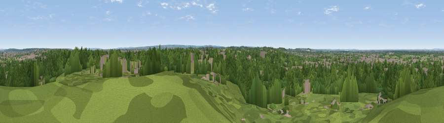

Viewpoint near Thames Ditton
#34417 in England · top 36% of its area beats it · near Thames DittonWhere it is
The exact computed spot (TQ 17625 66375). Click the marker for map links.
The view, rendered

A 360° render of this exact spot computed from the terrain model, tree cover and land cover — summer colours, afternoon light, calibrated against photographs of famous viewpoints. Real trees, hedges and buildings will differ in detail.
The panorama
Grey silhouette: terrain skyline in each direction (720 bearings, Earth curvature and refraction included). Dashed green: skyline with trees (+15 m) and buildings (+8 m) as obstacles. Blue strip: how far the ground is visible on each bearing.
Where the view opens
Wedge length = distance to the farthest visible ground on that bearing (vegetation-aware). Rings at 10, 25 and 50 km.
What fills the view
67% woodland · 22% built-up · 10% grassland
Angular shares of the visible panorama (visual magnitude), not map area. Landscape diversity 0.38 (0–1 Shannon).
Key numbers
More beautiful places nearby
The staircase of upgrades: each row has a higher view potential than everything closer. Driving times are estimates from straight-line distance, calibrated against real road routing — check an actual route before setting out.
| Place | Direction | Drive | Score |
|---|---|---|---|
| Viewpoint near Esher | WSW · 4 km | ~9 min | 45.4 |
| Viewpoint near Oxshott | S · 6 km | ~13 min | 50.5 |
| Box Hill | S · 15 km | ~27 min | 70.4 |
| Viewpoint near Box Hill Village | S · 15 km | ~27 min | 71.0 |
| Viewpoint near Coldharbour | S · 23 km | ~38 min | 71.3 |
| Viewpoint near Fernhurst | SW · 45 km | ~65 min | 75.1 |
| Coombe Hill Monument | NW · 52 km | ~73 min | 75.5 |
| Wolstonbury Hill | S · 54 km | ~75 min | 79.6 |
51.38424, -0.31109 · source: screening · position refined by local search. Computed location — check access rights before visiting.